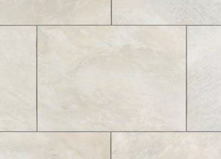
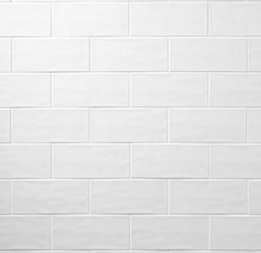
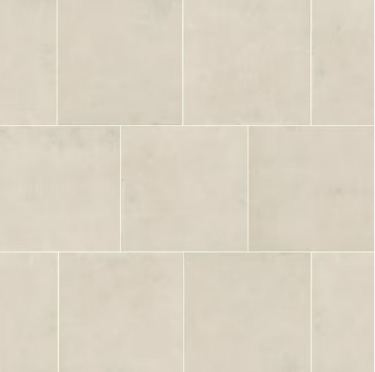
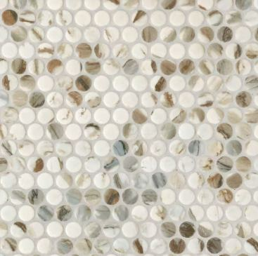
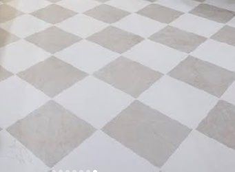

The room you cannot live without, so speed matters. A tub-to-shower conversion takes 2 to 3 days. A full primary bath takes 2 to 3 weeks. We stage every material before demo so the crew is never waiting on a delivery.
Waterproofing is the part nobody sees and the part that fails first. We build the wet area to a full waterproof membrane, not just backer board and hope, and that is what the 10 year workmanship warranty actually covers.
Full rebuild down to the studs
Walk-in and curbless shower construction with a proper sloped pan
Sheet or liquid waterproof membrane behind all tile
Tub replacement and tub-to-shower conversion
Vanity, mirror, lighting and exhaust fan replacement
Floor and wall tile, including niches, benches and curbs
Size drives the schedule more than finish level does. A hall bath and a primary suite can use identical tile and land weeks apart.
Guest & hall baths
Small footprint, high impact. Usually the shortest schedule in the house and the easiest place to test a finish direction before committing to the primary.
Tub or shower replacement
Vanity, mirror and lighting
Floor and wall tile
5–8 working days · $14,000–$28,000
Primary suites
Double vanities, larger showers, separate water closets and the storage that never got planned properly when the house was built.
Layout changes and wall moves
Custom glass and larger shower footprints
Double vanity and dedicated lighting circuits
2–3 weeks · $28,000–$65,000
Accessible baths
Built so someone can stay in their home safely. We install blocking behind the walls even when grab bars are not going in yet, because retrofitting it later means opening tile.
Curbless and low-threshold entries
Grab bar blocking and installation
Comfort-height fixtures and turning clearance
1–2 weeks · $18,000–$40,000
Most requested
Tub-to-shower conversion
Two to three days, one wet area, and the highest return per dollar of anything we do. Most Houston homes built before 2000 have a tub in the hall bath that nobody has taken a bath in for a decade.
Most "accessible" bathrooms fail on clearance, not on fixtures. A grab bar next to a doorway you cannot turn a walker through does not help anyone.
Curbless entries
The subfloor is recessed so the shower floor sits flush with the room. No lip to step over, no ramp, no threshold strip.
Blocking behind tile
Plywood backing across the full wet wall, so grab bars can go anywhere later without opening finished tile.
Turning clearance
We check the actual clear floor space against a walker or chair, and tell you honestly when the room is too small to make work.
Comfort-height fixtures
Raised toilets, vanity heights set to the person using them, and lever handles instead of round knobs throughout.
Finish Selection Package
Three curated tile collections
Every bathroom client works through the same book. Pick a tier, or mix across them. A Luxury shower wall over an Essential floor is a common and very good-looking combination.
Essential
Clean · Timeless · Rental-ready
Straightforward porcelain and ceramic in neutral whites, beiges and grays. Durable, easy to source, easy to replace, and it photographs well.

Paloma Beige

Maiolica WhitePenny White
Best for rentals, flips and resale
Widest availability, shortest lead time
Classic penny, hexagon and basketweave mosaics
3 floor · 4 wall · 3 shower floor
Signature
Warm · Textured · Elevated
The house look. Handmade-style zellige, warm ivories and natural pebble. More character than Essential without stepping into full custom pricing.

Vintage IvoryZellige Crema

Calacatta Vecchia
Best for owner-occupied remodels
Handmade zellige with natural variation
Tumbled marble and penny mosaics
3 floor · 3 wall · 3 shower floor
Luxury
Marble · Fluted · Statement
Polished porcelain marble looks, fluted ceramic, checkerboard patterning and honed stone mosaics. Highest visual impact, longest lead times.

Marble CheckerRibbon MapleLucia Pebble
Best for master suites and showpiece baths
Marble-look porcelain and fluted profiles
Honed and tumbled natural stone mosaic
3 floor · 4 wall · 3 shower floor
Mixing tiers You can pull from any tier in any category. Tell your project manager which rooms are getting which selections and we will price it before material is ordered.
A closer look at shower wall tile
The same tile reads completely differently depending on how it is set. Stacked and half-offset are standard; herringbone and vertical layouts add cut waste and labour time, so we confirm the adjustment before material is ordered.
Grout is a design decision, not an afterthought. Matching grout makes the wall read as one surface, which suits zellige, fluted and marble-look tile. Contrasting grout draws the pattern, which is the point of hexagon, penny, basketweave and herringbone.
Before you decide Grout darkens slightly as it cures, and light grout on a shower floor shows wear over time, so we generally recommend a mid-tone there. Final colour is confirmed against a physical grout board at the job site before installation.
Hardware & Fixture Finish
One finish carried through the whole house, covering bath accessories, faucets, shower trim, vanity lighting and interior levers.
A sample of recent bathroom projects in Oak Forest, Katy, Sugar Land and The Woodlands.
Our process
What happens between the first call and the last walkthrough
Consultation
About an hour at your house. Measurements, a look at existing conditions, and a straight conversation about budget before design starts.
Design & quote
Layout, tile and fixture selections with a line-item written price. Revisions are free. You owe nothing until you sign.
Order & schedule
Tile, fixtures and glass are ordered and staged in your garage before demo day, so the crew never stops mid-job waiting on a delivery.
Install & close out
Consecutive working days, dust barriers up, then a walkthrough, punch list and written warranty handover.
Pricing
What a Houston bathroom actually costs
We do not quote over the phone, because the honest answer depends on what is behind your walls. What we can do is be transparent about the ranges and the variables that move them.
Bathroom project ranges and timelines
Project
Typical range
Typical timeline
What moves the price
Tub-to-shower conversion
$6,500 – $14,000
2–3 days
Tile vs. surround, glass type, whether the valve is replaced
Guest bathroom remodel
$14,000 – $28,000
5–8 working days
Tile size and pattern, subfloor condition, fixture grade
Accessible bathroom
$18,000 – $40,000
1–2 weeks
Curbless entry, door widening, whether walls move for clearance
0% interest for 18 months on approved credit, or fixed-rate terms out to 120 months on larger projects. Pre-approval takes a few minutes and does not change your quote.
Payment schedule
10% at signing, 40% when materials are delivered to your house, 40% at substantial completion, and the final 10% only after you sign off on the punch list.
Change orders
If we find rot or a leak behind a wall, work on that area stops. You get photos, a written price, and the job does not resume until you approve it in writing.
$1,500 off a complete bathroom remodel
Book your free consultation by October 31, 2026 and mention this offer. Applies to projects of $15,000 or more, signed within 30 days of quote. Cannot be combined with other offers.
Only that one. If you have a second bathroom you will barely notice the disruption. If this is your only bathroom, tell us at the consultation and we will compress the schedule and sequence it so the toilet is back in service overnight wherever the plumbing allows. Be honest with us about it, because it changes how we plan the job.
Does removing my only tub hurt resale value?
If it is the only tub in the house, yes, it can. Buyers with young children filter for at least one tub. If you have a tub elsewhere, converting a second bathroom to a walk-in shower generally helps rather than hurts. We will say so if we think a conversion is the wrong call for your house.
What happens if you find rot or a leak behind the wall?
This is the most common source of remodeling disputes, so here is exactly how we handle it. Work in that area stops. The project lead photographs what was found and texts it to you the same day. You get a written price for the repair within one business day. Nothing resumes until you approve it in writing. Rotted subfloor around the toilet flange and old galvanized supply lines are what we find most often in Houston homes built before 1985.
How is the shower waterproofed?
A sloped mortar pan and a full sheet or liquid membrane behind every tiled surface in the wet area, flood tested before tile goes on. Cement backer board alone is not waterproofing, despite how often it gets installed that way. The membrane is what our 10 year workmanship warranty is actually backing.
Do you handle permits for bathroom work?
Yes. We pull permits in the City of Houston and in Harris, Fort Bend, Montgomery and Brazoria counties, and we schedule the inspections. Permits are included in your quoted price. A straight fixture swap in the same location usually does not require one. Moving a drain, relocating a wall or adding a circuit does.
Can I supply my own tile and fixtures?
Yes. We will install what you supply, but our 10 year workmanship warranty covers our labor only, not the product. You are responsible for ordering the right quantity, and we build in a 10% overage on tile. An item that arrives damaged or short becomes a schedule delay we cannot control.
Also doing a kitchen?
Kitchen remodeling
Refresh, replace or reconfigure, from 1 week to 10. Homeowners who book both rooms in the same contract save on mobilization and get one continuous schedule instead of two separate disruptions.